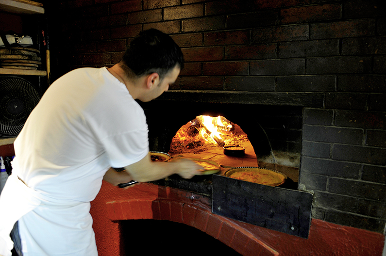
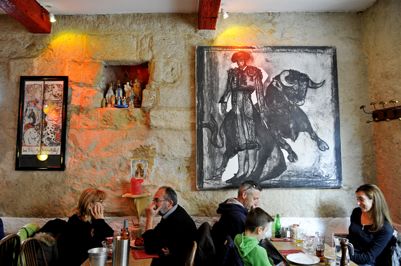
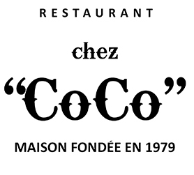

"L'AUTHENTIQUE BISTROT AIGUES-MORTAIS"
Situé dans le village d'Aigues Mortes intra-muros, Ce restaurant traditionnel vous accueille chaque jours de l'année pour vous faire découvrir son menu "fait maison". Ces spécialités de toro (gardianne) et de grillades au feu de bois s'adressent à de vrais gourmets.
Il règne chez Coco une ambiance chaleureuse où il n'est pas rare d'y croiser quelques célébrités. Découvrez "un vrai petit bouchon" en plein coeur de la Camargue !


"Le bouchon camarguais" inspiré du bouchon Lyonnais est un restaurant typique où l’on mange des spécialités, en Camargue c'est du taureau
ou toro pour les puristes ; en grillades ou en daube (ou gardianne), accompagné de salades typiques. Le tout est généralement arrosé
d’un Côtières de Nîmes ou d'un Côtes du Rhône (à boire avec modération bien sur !). ce lieu traditionnel se doit d’être simple et convivial.
Il se doit d’assurer une tradition sincère de la cuisine basée sur l’authenticité des produits, mais aussi de représenter un lieu d’accueil chaleureux où se mélent joie et bonne humeur.
{kind=link}
{kind=link}
{kind=link}
{kind=link}
{kind=link}
{kind=link}
Tableau des allergènes disponible, veuillez le demander !
Pizzas au feu de bois
Napolitaine (fromage, anchois)
Fromage
Champignon-fromage
Jambon-fromage
Reine (jambon, poivrons, fromage)
Marguarita (mozzarella italienne)
Sicilienne (fromage, anchois, câpres, poivrons)
4 saisons (fromage, poivrons, artichaut, champignons)
Fruits de mer (fruits de mer, tomates, fromage)
Riviera (fromage, jambon, oeuf, champignons)
Romaine (fromage, chorizo, poivron, câpre, oignons)
4 fromages (emmental, roquefort, mozzarella, chèvre)
Régina (jambon, champignons, fromage)
Norvégienne (sauce blanche, fromage, saumon)
Verte (sauce blanche, mozzarella, parmezan, roquette)
Nîmoise (brandade maison, olives)
Pâtes
Lasagnes à la crème (jambon, champignons)
Spaguetti bolognaise
Spaguetti fruits de mer
Pâtes carbonara
Tagliatelles au basilic
Tagliatelles au saumon
Raviolis à l'italienne (boeuf, mozzarella)
Salades
Salade de foies de volaille
Salade frisée aux lardons et oeuf poché
Salade du chef (Tomate, huile d’olive mozza, basilic, anchois, câpres)
Salade composée (Pomme de Terre, haricots, thon, oeuf dur, olives, tomate)
Salade de pays (Coeur de laitue)
Salade coco (Frisée, fromage de chèvre chaud, croûtons)
Poivrons grillés au feu de bois
Anchoïade (Pain avec crème d’anchois maison, salade frisée, tomate)
Salade Bonail (Salade frisée, aïl, huile d’olive, croûtons, anchois)
Entrées
Assiette de saumon fumé
Gaspacho
Potage de saison
Viandes grillées au feu de bois
toutes nos viandes sont garnies de pommes de terre des sables
Épaule d’agneau (Pour 2 personnes)
Côte de boeuf (Pour 2 personnes)
Côtelettes d’agneau
Entrecôte grillée (220gr)
Lapin en brochette
Andouillette
Parilla (Côtelettes, lapin, saucisse)
Escalope de veau à la milanaise (Spaghetti, beurre, citron)
Côte de taureau (350gr)
Filet de toro (250gr)
Pavé de toro (200gr)
Entrecôte de toro (220gr)
Sauce Roquefort en supplément
Fromages et desserts
Fromage de chèvre
Sorbet et glaces artisanales
Poire belle-hélène
Café ou chocolat liégeois
Profiteroles
Pêche melba
Tarte maison
Fondant au chocolat
Mousse chocolat

Cliquez sur la carte pour vous géolocaliser,
puis "agrandir le plan", pour accéder à GoogleMap.
04 66 53 91 83
Restaurant
ouvert toute l'année.